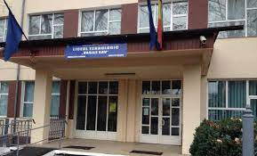
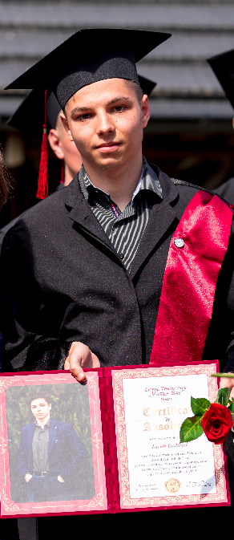

Pentru mine, liceul tehnologic "Vasile Sav" a fost nu doar un izvor necesar de cunostinte,
dar si o adevarat scoala a vietii. A fost prima treapta in formarea
personalitatii mele, dorul de liceu nu mi se stinge in suflet, pentru ca fiecare
amintire legata de acest spatiu inca imi mai stapaneste gandurile.
Anii de liceu vor ramane in memoria mea ca cei mai frumosi, in fiecare minut trait
era o noua experienta.
